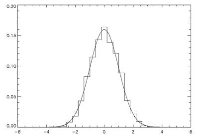

The IDL Direct G raphics routines, CURSOR, ERASE, PLOTS, POLYFILL, TV (and TVSCL), TVCRS, TVRD, and XYOUTS, and the plotting procedures, AXIS, CONTOUR, PLOT, OPLOT, SHADE_SURF, and SURFACE, accept a number of common keywords. Therefore, instead of describing each keyword along with the description of each routine, this section contains a brief summary of each graphics keyword. Routine-specific keywords are documented in the description of the routine.The graphics keywords are described below. The name of each keyword is followed by a list of routines that accept that keyword. Keywords that have a direct correspondence to fields in a system variable (usually !P) are also indicated.
The keywords that control the plot axes are prefixed with the character ‘X’, ‘Y’, or ‘Z’ depending on the axis in question. These keywords correspond to fields in the axis system variables: !X, !Y, and !Z, and are described in more detail in Direct Graphics System Variables . The axis keywords are shown in the form [XYZ]NAME. For example, [XYZ]CHARSIZE refers to the three keywords XCHARSIZE, YCHARSIZE, and ZCHARSIZE, which control the size of the characters annotating the three axes.
The system variable fields that control this are !X.CHARSIZE, !Y.CHARSIZE, and !Z.CHARSIZE.
The following graphics keywords are discussed in this page:
Accepted by: CONTOUR Procedure , PLOT Procedure , SURFACE Procedure , System variable equivalent: !P.BACKGROUND.
The background color index or 24-bit color value to which all pixels are set when erasing the screen or page. The default is 0 (black). Not all devices support erasing the background to a specified color.
For example, to produce a black plot with a white background on an indexed-color display:
PLOT, Y, BACKGROUND = 255, COLOR = 0
Note: If the NOERASE keyword (or !P.NOERASE) is set, the value of the BACKGROUND keyword (or !P.BACKGROUND) is ignored.
Accepted by: ERASE Procedure , TV Procedure , TVRD , TVSCL Procedure . System variable equivalent: !P.CHANNEL.
This keyword specifies the memory channel for the operation. This parameter is ignored on display systems that have only one memory channel. When using a “decomposed” display system, the red channel is 1, the green channel is 2, and the blue channel is 3. Channel 0 indicates all channels. If omitted, !P.CHANNEL contains the default channel value.
Note: CONTOUR, PLOT, SHADE_SURF, and SURFACE also accept the CHANNEL keyword, but simply pass it to ERASE.
Images can be transferred to and from the display in either 8-bit or 24-bit mode. The CHANNEL parameter specifies the source or destination channel number for 8-bit images, and the TRUE keyword TrueColor Images) indicates for 24-bit images the method of channel interleaving. If neither keyword parameter is present, the 8-bit image is written to all three-color channels, yielding the same effect as if the channel parameter is specified as 0.
For example, to transfer three 8-bit images contained in the arrays R, G, and B to their respective channels, use the following statements:
;Load red in channel 1:
TV, R, 0, 0, 1
;Load green in channel 2:
TV, G, 0, 0, 2
;Load blue in channel 3:
TV, B, 0, 0, 3
The position parameters (0, 0 above) can be altered to write to any location in the window.
When using the Z buffer device with a pixel depth of 8 bits per pixel:
When using the Z buffer device with a pixel depth of 24 bits per pixel:
Accepted by: AXIS Procedure , CONTOUR Procedure , PLOT Procedure , SHADE_SURF Procedure , SURFACE Procedure , XYOUTS Procedure . System variable equivalent: !P.CHARSIZE.
The overall character size for the annotation when Hershey fonts are selected. This keyword does not apply when hardware (i.e. PostScript) fonts are selected. A CHARSIZE of 1.0 is normal. The size of the annotation on the axes may be set, relative to CHARSIZE, with x CHARSIZE, where x is X, Y, or Z. The main title is written with a character size of 1.25 times this parameter.
Accepted by: AXIS Procedure , CONTOUR Procedure , PLOT Procedure , SHADE_SURF Procedure , SURFACE Procedure , XYOUTS Procedure .System variable equivalent: !P.CHARTHICK.
An integer value specifying the line thickness of the vector drawn font characters.This keyword has no effect when used with the hardware drawn fonts. The default value is 1.
Accepted by: CONTOUR Procedure , DRAW_ROI Procedure , OPLOT Procedure , PLOT Procedure , PLOTS Procedure , POLYFILL Procedure , SHADE_SURF Procedure , SURFACE Procedure , TV Procedure TV Procedure , TVCRS Procedure , XYOUTS Procedure . System variable equivalent: !P.CLIP.
The coordinates of a rectangle used to clip the graphics output. The rectangle is specified as a vector of the form [ X 0 , Y 0 , X 1 , Y 1 ], giving coordinates of the lower left and upper right corners, respectively. The default clipping rectangle is the plot window, the area enclosed within the axes of the most recent plot. Coordinates are specified in data units unless an overriding coordinate unit specification keyword is present (i.e., NORMAL or DEVICE). If the clipping is provided in data or normalized units, the actual clipping rectangle is computed by converting those values to device units. The clipping itself always occurs in device space.
Note: The default is not to clip the output of PLOTS and XYOUTS. To enable clipping include the keyword parameter NOCLIP = 0. With PLOTS, POLYFILL, and XYOUTS, this keyword controls the clipping of vectors and vector-drawn text.
For example, to draw a vector using normalized coordinates with its contents clipped within a rectangle covering the upper left quadrant of the display:
PLOTS, X, Y, CLIP=[0.,.5,.5,1.0], /NORM, NOCLIP=0
Accepted by: AXIS Procedure , CONTOUR Procedure , DRAW_ROI Procedure , PLOT Procedure , PLOTS Procedure , POLYFILL Procedure , SHADE_SURF Procedure , SURFACE Procedure , TV Procedure , TVCRS Procedure , XYOUTS Procedure . System variable equivalent: !P.COLOR.
Set this keyword to specify the color index of the data, text, line, or solid polygon fill to be drawn. If this keyword is omitted, !P.COLOR specifies the color index.
For example, to draw using the color of entry 160 in the current color table, set
!P.COLOR=160
Set this keyword to a hexidecimal 24-bit RGB color specification ( 'bbggrr'x ). Note that IDL’s Direct Graphics system uses a different specification format than the Object Graphics system.
For example to draw using a pure blue line, set
!P.COLOR='FF0000'x
When used with the PLOTS, POLYFILL, or XYOUTS procedure, this keyword parameter can be set to a vector to specify multiple color specifications.
Gouraud shading of polygons is performed with the Z-buffer graphics output device and POLYFILL procedure when COLOR contains an array of color specifications, one for each vertex.
Accepted by: AXIS Procedure , CONTOUR Procedure , CURSOR Procedure , DRAW_ROI Procedure , PLOT Procedure , PLOTS Procedure , POLYFILL Procedure , SHADE_SURF Procedure , SURFACE Procedure , TV Procedure , TVCRS Procedure , XYOUTS Procedure .
Set this keyword to indicate that the clipping and/or positioning coordinates supplied are specified in the data coordinate system. The default coordinate system is DATA if no other coordinate-system specifications are present.
AXIS Procedure , CONTOUR Procedure , CURSOR Procedure , DRAW_ROI Procedure , PLOT Procedure , PLOTS Procedure , POLYFILL Procedure , SHADE_SURF Procedure , SURFACE Procedure , TV Procedure , TVCRS Procedure , XYOUTS Procedure .
Set this keyword to indicate that the clipping and/or positioning coordinates supplied are specified in the device coordinate system. The default coordinate system is DATA if no other coordinate-system specifications are present.
For example, the following code displays an image contained in the variable A and then draws a contour plot of pixels [100:499, 100:399] over the correct section of the image:
;Display the image.
TV,A
;Draw the contour plot, specify the coordinates of the plot, in
;device coordinates, do not erase, set the X and Y axis styles to
;EXACT.
CONTOUR, A[100:499, 100:399], $
POS = [100,100, 499,399], /DEVICE, $
/NOERASE, XSTYLE=1, YSTYLE=1
Note that in the above example, the keyword specification /DEVICE is equivalent to DEVICE = 1 .
Accepted by: AXIS Procedure , CONTOUR Procedure , PLOT Procedure , SHADE_SURF Procedure , SURFACE Procedure XYOUTS Procedure . System variable equivalent: !P.FONT.
An integer that specifies the graphics text font system to use. Set FONT equal to -1 to select the Hershey character fonts, which are drawn using vectors. Set FONT equal to 0 (zero) to select the device font of the output device. Set FONT equal to 1 (one) to select the TrueType font system. See Fonts in IDL Direct Graphics for a complete description of IDL’s font systems.
Accepted by: DRAW_ROI Procedure , OPLOT Procedure , PLOT Procedure , PLOTS Procedure , POLYFILL Procedure , SURFACE Procedure . System variable equivalent: !P.LINESTYLE.
This keyword indicates the line style used to draw lines; it indicates the line style of the lines used to connect the data points. This keyword should be set to the appropriate index for the desired linestyle as described in the following table.
|
Index |
Linestyle |
|
0 |
Solid |
|
1 |
Dotted |
|
2 |
Dashed |
|
3 |
Dash Dot |
|
4 |
Dash Dot Dot |
|
5 |
Long Dashes |
Accepted by: CONTOUR Procedure DRAW_ROI Procedure , OPLOT Procedure , PLOT Procedure , PLOTS Procedure , POLYFILL Procedure , SURFACE Procedure , XYOUTS Procedure . System variable equivalent: !P.NOCLIP.
Set this keyword to suppress clipping of the plot. The clipping rectangle is contained in !P.CLIP. By default, the plot is clipped within the plotting window.
Note: The default value is clipping-disabled for PLOTS, POLYFILL, and XYOUTS. For all other routines, the default is to enable clipping.
With PLOTS, POLYFILL, and XYOUTS, this keyword controls the clipping of vectors and vector-drawn text. The default is to disable clipping, so to enable clipping include the parameter NOCLIP = 0. To explicitly disable clipping set this parameter to one.
Accepted by: AXIS Procedure , CONTOUR Procedure , PLOT Procedure , SHADE_SURF Procedure , SURFACE Procedure .
If this keyword is set, only the axes, titles, and annotation are drawn. No data points are plotted. If the OVERPLOT keyword is specified, axis ranges will not change.
For example, to draw an empty set of axes between some given values:
PLOT, [XMIN, XMAX],[YMIN, YMAX], /NODATA
Accepted by: AXIS Procedure , CONTOUR Procedure , PLOT Procedure , SURFACE Procedure . System variable equivalent: !P.NOERASE.
Specifies that the screen or page is not to be erased. By default, the screen is erased, or a new page is begun, before a plot is produced.
Note: If the NOERASE keyword (or !P.NOERASE) is set, the value of the BACKGROUND keyword (or !P.BACKGROUND) is ignored.
Accepted by: AXIS Procedure , CONTOUR Procedure CURSOR Procedure , DRAW_ROI Procedure , PLOT Procedure , PLOTS Procedure , POLYFILL Procedure , SHADE_SURF Procedure , SURFACE Procedure , TV Procedure , TVCRS Procedure , XYOUTS Procedure .
Set this keyword to indicate that the clipping and/or positioning coordinates supplied are specified in the normalized coordinate system, and range from 0.0 to 1.0. The default coordinate system is DATA if no other coordinate-system specifications are present.
Accepted by: DRAW_ROI Procedure , POLYFILL Procedure , XYOUTS Procedure .
Specifies the counterclockwise angle in degrees from horizontal of the text baseline and the lines used to fill polygons.When used with the POLYFILL procedure, this keyword forces the “linestyle” type of fill, rather than solid or patterned fill.
Accepted by: CONTOUR Procedure MAP_SET Procedure , PLOT Procedure , SHADE_SURF Procedure , SURFACE Procedure . System variable equivalent: !P.POSITION.
Allows direct specification of the plot window. POSITION is a 4-element vector giving, in order, the coordinates [(X 0 , Y 0 ), (X 1 , Y 1 )], of the lower left and upper right corners of the data window. Coordinates are expressed in normalized units ranging from 0.0 to 1.0, unless the DEVICE keyword is present, in which case they are in actual device units. The value of POSITION is never specified in data units, even if the DATA keyword is present.
When setting the position of the window, be sure to allow space for the annotation, which resides outside the window. IDL outputs the message “% Warning: Plot truncated.” if the plot region is larger than the screen or page size. The plot region is the rectangle enclosing the plot window and the annotation.
When plotting in three dimensions, the POSITION keyword is a 6-element vector with the first four elements describing, as above, the XY position, and with the last two elements giving the minimum and maximum Z coordinates. The Z specification is always in normalized coordinate units.
When making more than one plot per page it is more convenient to set !P.MULTI than to manipulate the position of the plot directly with the POSITION keyword.
For example, the following statement produces a contour plot with data plotted in only the upper left quarter of the screen:
CONTOUR, Z, POS=[0., 0.5, 0.5, 1.0]
Because no space on the left or top edges was allowed for the axes or their annotation, the above described warning message results.
See PLOT Procedure for more information.
Note: For information on window placement and multi-monitor configurations, see Multi-Monitor Configurations .
Accepted by: DRAW_ROI Procedure , OPLOT Procedure , PLOT Procedure , PLOTS Procedure . System variable equivalent: !P.PSYM.
The symbol used to mark each data point. Normally, PSYM is 0, data points are connected by lines, and no symbols are drawn to mark the points. Set this keyword, or the system variable !P.PSYM, to the symbol index as shown in the table below to mark data points with symbols. When a positive value is supplied for PSYM, no lines are used to connect the data points (except when PSYM=10). The keyword SYMSIZE is used to set the size of the symbols.
|
PSYM Value |
Plotting Symbol |
|
1 |
Plus sign (+) |
|
2 |
Asterisk (*) |
|
3 |
Period (.) |
|
4 |
Diamond |
|
5 |
Triangle |
|
6 |
Square |
|
7 |
X |
|
8 |
User-defined. See USERSYM Procedure procedure. |
|
9 |
Undefined |
|
10 |
Histogram mode. Horizontal and vertical lines connect the plotted points, as opposed to the normal method of connecting points with straight lines. See Histogram Mode for an example. |
Negative values of PSYM cause the symbol designated by PSYM to be plotted at each point with solid lines connecting the symbols. For example, a value of -5 plots triangles at each data point and connects the points with lines. Histogram mode is the exception to this rule; since the points are already connected when PSYM=10, specifying the value -10 is meaningless, and will result in an error.
The following IDL code plots an array using points, and then overplots the smoothed array, connecting the points with lines:
;Plot using points.
PLOT, A, PSYM=3
;Overplot smoothed data.
OPLOT, SMOOTH(A,7)
See PLOT Procedure for another example.
Using the keyword PSYM=10 with the PLOT routines draws graphs in the histogram mode, connecting points with vertical and horizontal lines. This next figure illustrates the comparison between the distribution of the IDL normally distributed random number function (RANDOMN) to the theoretical normal distribution.
|
 |
The plot was produced by the following IDL commands:
; Two-hundred values ranging from -5 to 4.95:
X = FINDGEN(200) / 20. - 5.
; Theoretical normal distribution, scale so integral is one:
Y = 1/SQRT(2.*!PI) * EXP(-X^2/2) * (10./200)
; Approximate normal distribution with RANDOMN,
; then form the histogram.
H = HISTOGRAM(RANDOMN(SEED, 2000), $
BINSIZE = 0.4, MIN = -5., MAX = 5.)/2000.
; Plot the approximation using "histogram mode."
PLOT,FINDGEN(26) * 0.4 - 4.8, H, PSYM = 10
; Overplot the actual distribution:
OPLOT, X, Y * 8.
Accepted by: AXIS Procedure , CONTOUR Procedure , PLOT Procedure , SHADE_SURF Procedure , SURFACE Procedure . System variable equivalent: !P.SUBTITLE.
A text string to be used as a subtitle for the plot. Subtitles appear below the X axis.
Accepted by: DRAW_ROI Procedure , OPLOT Procedure , PLOT Procedure , PLOTS Procedure
Specifies the size of the symbols drawn when PSYM is set. The default size of 1.0 produces symbols approximately the same size as a character.
Accepted by: AXIS Procedure , CONTOUR Procedure DRAW_ROI Procedure , MAP_SET Procedure , OPLOT Procedure , PLOT Procedure , PLOTS Procedure , POLYFILL Procedure , SHADE_SURF Procedure , SURFACE Procedure , TV Procedure TV Procedure , TVCRS Procedure , TVSCL Procedure , XYOUTS Procedure . System variable equivalent: !P.T3D.
Set this keyword to indicate that the generalized transformation matrix in !P.T is to be used. If not present, the user-supplied coordinates are simply scaled to screen coordinates. See the examples in the description of the SAVE keyword.
Note: Since T3D uses the transformation matrix in !P.T, it is important that !P.T contain a valid transformation matrix. This can be achieved in several ways:
Note: When used with the TV or TVSCL routines, the T3D and Z keywords are only honored when the DATA keyword is also set. Note also that when the T3D keyword is set, the X and Y arguments and the Z keyword position the lower left corner of the image, but do not change its orientation. Use the POLY_2D routine to warp the image into 3D space.
Accepted by: AXIS Procedure , CONTOUR Procedure , DRAW_ROI Procedure , OPLOT Procedure , PLOT Procedure , PLOTS Procedure , POLYFILL Procedure , SHADE_SURF Procedure , SURFACE Procedure ,
System variable equivalent: !P.THICK.
Indicates the line thickness. THICK overrides the setting of !P.THICK.
Accepted by: AXIS Procedure , CONTOUR Procedure , PLOT Procedure , SHADE_SURF Procedure , SURFACE Procedure . System variable equivalent: !P.TICKLEN.
Controls the length of the axis tick marks, expressed as a fraction of the window size. The default value is 0.02. TICKLEN of 1.0 produces a grid, while a negative TICKLEN makes tick marks that extend outside the window, rather than inwards. A value of -0.02 makes tick marks that extend away from the plot. Individual axis ticks can be controlled with the [XYZ]TICKLEN keyword.
For example, to produce outward-going tick marks of the normal length:
PLOT, X, Y, TICKLEN = -0.02
To provide a new default tick length, set !P.TICKLEN.
Accepted by: AXIS Procedure , CONTOUR Procedure , PLOT Procedure , SHADE_SURF Procedure , SURFACE Procedure . System variable equivalent: !P.TITLE.
Produces a main title centered above the plot window. The text size of this main title is larger than the other text by a factor of 1.25. For example:
PLOT, X, Y, TITLE = 'Final Results'
Accepted by: AXIS Procedure , CONTOUR Procedure , PLOT Procedure , SHADE_SURF Procedure , SURFACE Procedure . System variable equivalents: ![XYZ].CHARSIZE.
The size of the characters used to annotate the axis and its title when Hershey fonts are selected. This keyword does not apply when hardware (i.e. PostScript) fonts are selected. This field is a scale factor applied to the global scale factor set by !P.CHARSIZE or the keyword CHARSIZE.
Accepted by: AXIS Procedure , CONTOUR Procedure , PLOT Procedure , SHADE_SURF Procedure , SURFACE Procedure .
The index of the linestyle to be used for plot tickmarks and grids (i.e., when [XYZ]TICKLEN is set to 1.0). See LINESTYLE for a list of linestyles.
Accepted by: AXIS Procedure , CONTOUR Procedure , PLOT Procedure , SHADE_SURF Procedure , SURFACE Procedure . System variable equivalent: ![XYZ].MARGIN.
A 2-element array specifying the margin on the left (bottom) and right (top) sides of the plot window, in units of character size. The plot window is the rectangular area that contains the plot data, i.e. the area enclosed by the axes.
The default values for XMARGIN are [10, 3] yielding a 10-character wide left margin and a 3-character wide right margin. The values for YMARGIN are [4, 2], for a 4-character high bottom margin and a 2-character high top margin. While specifying ZMARGIN will not cause an error, Z margins are currently ignored.
Accepted by: AXIS Procedure , CONTOUR Procedure , PLOT Procedure , SHADE_SURF Procedure , SURFACE Procedure . System variable equivalent: ![XYZ].MINOR.
The number of minor tick mark intervals. If set to zero, the default, IDL automatically determines the number of minor ticks in each major tick-mark interval. Setting this value a positive, nonzero number, n , produces n minor-tick intervals, and n –1 minor-tick marks. Setting this value equal to 1 suppresses minor tick marks. (Set [XYZ]TICKS =1 to suppress major tick marks.)
Accepted by: AXIS Procedure , CONTOUR Procedure , PLOT Procedure , SHADE_SURF Procedure , SURFACE Procedure . System variable equivalent: ![XYZ].RANGE.
The desired data range of the axis, a 2-element vector. The first element is the axis minimum, and the second is the maximum. IDL will frequently round this range. This override can be defeated using the [XYZ]STYLE keywords.
Accepted by: AXIS Procedure , CONTOUR Procedure , PLOT Procedure , SHADE_SURF Procedure , SURFACE Procedure . System variable equivalent: ![XYZ].STYLE.
This keyword allows specification of axis options such as rounding of tick values and selection of a box axis. Each option is described in the following table:
|
Value |
Description |
|
1 |
Force exact axis range. |
|
2 |
Extend axis range. |
|
4 |
Suppress entire axis |
|
8 |
Suppress box style axis (i.e., draw axis on only one side of plot) |
|
16 |
Inhibit setting the Y axis minimum value to 0 (Y axis only) |
Note that this keyword is set bitwise, so multiple effects can be achieved by adding values together. For example, to make an X axis that is both exact (value 1) and suppresses the box style (setting 8), set the XSTYLE keyword to 1+8 , or 9.
Accepted by: AXIS Procedure , CONTOUR Procedure , PLOT Procedure , SHADE_SURF Procedure , SURFACE Procedure . System variable equivalent: ![XYZ].THICK.
This keyword controls the thickness of the lines forming the x , y , or z axes and their tick marks. A value of 1.0 is the default.
Accepted by: AXIS Procedure , CONTOUR Procedure , PLOT Procedure , SHADE_SURF Procedure , SURFACE Procedure .
A named variable in which to return the values of the tick marks for the designated axis. The result is a double precision floating-point array with the same number of elements as ticks.
For example, to retrieve in the variable V the values of the tick marks selected by IDL for the Y axis:
PLOT, X, Y, YTICK_GET = V
Accepted by: AXIS Procedure , CONTOUR Procedure , PLOT Procedure , SHADE_SURF Procedure , SURFACE Procedure . System variable equivalent: ![XYZ].TICKFORMAT.
Set this keyword to a string or a vector of strings. The string can be a format string or a string containing the name of a function that returns a string to be used to format the axis tick mark labels. If a vector is provided, each string corresponds to a level of the axis. The [XYZ]TICKUNITS keyword determines the number of levels for an axis.
Each string is one of the following:
If the string begins with an open parenthesis, it is treated as a standard format string. See Format Codes for more information on format codes.
Example 1 : Display the X axis tick values using a format of F6.2 (six characters, with 2 places after the decimal point):
PLOT, X, Y, XTICKFORMAT='(F6.2)'
Example 2 : Display the Y tick values using the “dollars and cents” format $ dddd.dd :
PLOT, X, Y, YTICKFORMAT='("$", F7.2)'
Set [XYZ]TICKFORMAT to the string 'LABEL_DATE' to create axes with date labels. The formatting of the labels is specified by first calling LABEL_DATE with the DATE_FORMAT keyword.
Example : Use the LABEL_DATE function as the callback function to display the X tick values in a date/time format:
dummy = LABEL_DATE(DATE_FORMAT='%M %Z')
mytimes = TIMEGEN(12, UNITS='MONTHS', START=JULDAY(1,1,2000))
y = FINDGEN(12)
PLOT, mytimes, y, XTICKUNITS='Time', XTICKFORMAT='LABEL_DATE'
See the Examples section of LABEL_DATE for more extensive examples.
If the string does not begin with an open parenthesis, it is interpreted as the name of a callback function to be used to generate tick mark labels. This function is defined with either three or four parameters, depending on whether [XYZ]TICKUNITS is specified:
If [XYZ]TICKUNITS is not specified, the callback function is called with three parameters, Axis , Index , and Value , where:
Note: Value is a double-precision floating-point value that represents the Julian date. The Julian date follows the astronomical convention, where Julian date 0.0d corresponds to 1 Jan 4713 B.C.E. at 12 pm.
If [XYZ]TICKUNITS is specified, the callback function is called with four parameters, Axis , Index , Value , and Level , where:
Example 1 : Use a callback function to display the Y tick values as a percentage of a fixed value. Note that because we don’t specify [XYZ]TICKUNITS, we do not include the Level parameter in our function definition:
FUNCTION YTICKS, axis, index, value
fixvalue = 389.0d
pvalue = (value/fixvalue) * 100.0d
RETURN, STRING(pvalue, FORMAT='(D5.2,"%")')
END
PRO use_callback
Y = FINDGEN(10)
PLOT, Y, YTICKFORMAT='YTICKS'
END
Example 2 : Create a two-level X axis. Display the X tick values in a customized date/time format that shows the number of days open for business for each month on one level, and marks leap years with an asterisk on another level:
FUNCTION XTICKS, axis, index, value, level
CASE level OF
0: BEGIN ; months
; Number of days open for business in given month:
CALDAT, value, month
open = [18,19,23,20,22,22,19,10,20,21,22,14]
nbdays = open[month]
; Return a string containing the month name plus
; the number of business days in parentheses:
RETURN, STRING(value, nbdays, $
FORMAT='(C(CMoA), "(", I2, ")")')
END
1: BEGIN ; years
; Generate a string for the year.
yrStr = STRING(value, FORMAT='(C(CYI))')
; Determine if a leap year. If so,
; append an asterisk to the string.
CALDAT, value, mo, da, yr
IF (yr MOD 4 EQ 0) THEN BEGIN
IF (yr MOD 100 EQ 0) THEN $
isLeap = (yr MOD 400) EQ 0 $
ELSE $
IsLeap = 1b
ENDIF ELSE $
isLeap = 0b
IF (isLeap NE 0b) THEN $
yrStr = yrStr + '*'
RETURN, yrStr
END
ENDCASE
END
PRO plot_sales
myDates = TIMEGEN(12, UNITS='Months', START=JULDAY(1,1,2000))
sales = [180,190,230,200,220,220,190,100,200,210,220,140]
PLOT, myDates, sales, XTICKUNITS=['Months', 'Years'], $
XTICKFORMAT='XTICKS', XTITLE = 'Date (* = Leap Year)', $
YTITLE='Sales (units)', POSITION = [0.2, 0.2, 0.9, 0.9]
END
Accepted by: AXIS Procedure , CONTOUR Procedure , PLOT Procedure , SHADE_SURF Procedure , SURFACE Procedure .
variable equivalent: ![XYZ].TICKINTERVAL
Set this keyword to a scalar indicating the interval between major tick marks for the first axis level. The default value is computed according to the axis range ([XYZ]RANGE) and the number of major tick intervals ([XYZ]TICKS). This keyword takes precedence over [XYZ]TICKS.
For example, if TICKUNITS=[“Seconds”, “Hours”, “Days”], and XTICKINTERVAL=30, then the interval between major ticks for the first axis level will be 30 seconds.
Accepted by: AXIS Procedure , CONTOUR Procedure , PLOT Procedure , SHADE_SURF Procedure , SURFACE Procedure . System variable equivalent: ![XYZ].TICKLAYOUT.
Set this keyword to a scalar that indicates the tick layout style to be used to draw each level of the axis.
Valid values include:
Note: For all tick layout styles, at least one tick label will appear on each level of the axis (even if no major tick marks fall along the axis line). If there are no major tick marks, the single tick label will be centered along the axis.
Accepted by: AXIS Procedure , CONTOUR Procedure , PLOT Procedure , SHADE_SURF Procedure , SURFACE Procedure . System variable equivalent: ![XYZ].TICKLEN.
This keyword controls the lengths of tick marks (expressed in normal coordinates) for the individual axes. This keyword, if nonzero, overrides the global tick length specified in !P.TICKLEN, and/or the TICKLEN keyword parameter, which is expressed as a fraction of the window size in the tick mark’s direction.
Accepted by: AXIS Procedure , CONTOUR Procedure , PLOT Procedure , SHADE_SURF Procedure , SURFACE Procedure . System variable equivalent: ![XYZ].TICKNAME.
A string array of up to 30 elements that controls the annotation of each tick mark. If omitted or if a given string element contains an empty string, IDL labels the tick mark with its value. To suppress the tick labels, supply a string array of one-character long, blank strings, i.e., REPLICATE(' ', N) . Empty strings force IDL to number the tick mark with its value.
Note: If there are n tick-mark intervals, there are n + 1 tick marks and labels.
Accepted by: AXIS Procedure , CONTOUR Procedure , PLOT Procedure , SHADE_SURF Procedure , SURFACE Procedure . System variable equivalent: ![XYZ].TICKS.
The number of major tick intervals to draw for the axis. If this keyword is set to zero or omitted, IDL selects from three to six tick intervals. Setting this value to n , where n > 1, produces exactly n tick intervals, and n +1 tick marks. Setting this value equal to 1 suppresses major tick marks. (Set [XYZ]MINOR =1 to suppress minor tick marks.)
Accepted by: AXIS Procedure , CONTOUR Procedure , PLOT Procedure , SHADE_SURF Procedure , SURFACE Procedure . System variable equivalent: ![XYZ].TICKUNITS.
Set this keyword to a string or a vector of strings indicating the units to be used for axis tick labeling. If a vector of strings is provided, the axis will be drawn in multiple levels, where each string represents one level in the specified units.
Note: When creating multiple-level axes, you may need to adjust the plot positioning using the POSITION or [XYZ]MARGIN keywords in order to ensure that axis labels and titles are visible in the plot window.
The order in which the strings appear in the vector determines the order in which the corresponding unit levels will be drawn. The first string corresponds to the first level (the level nearest to the primary axis line).
Valid unit strings include:
If any of the time units are utilized, the tick values are interpreted as Julian date/time values.
Note that the singular form of each of the time value strings is also acceptable (e.g, TICKUNITS='Day' is equivalent to TICKUNITS='Days').
Note: Julian values must be in the range -1095 to 1827933925, which corresponds to calendar dates 1 Jan 4716 B.C.E. and 31 Dec 5000000, respectively.
Accepted by: AXIS Procedure , CONTOUR Procedure , PLOT Procedure , SHADE_SURF Procedure , SURFACE Procedure . System variable equivalent: ![XYZ].TICKV.
The data values for each tick mark, an array of up to 60 elements. You can directly specify these values, producing graphs with arbitrary tick marks. If you do this, IDL scales the axis from the first tick value to the last unless you directly specify a range.
Note: To specify the number of ticks and their values exactly, set [XYZ]TICKS= N(where N > 1) and [XYZ]TICKV= Values , where Values has N +1 elements.
Accepted by: AXIS Procedure , CONTOUR Procedure , PLOT Procedure , SHADE_SURF Procedure , SURFACE Procedure .
System variable equivalent: ![XYZ].TITLE.
A string that contains a title for the specified axis.
Accepted by: PLOTS Procedure , POLYFILL Procedure , TV Procedure , TVCRS Procedure , TVSCL Procedure , XYOUTS Procedure .
Provides the Z coordinate if a Z parameter is not present in the call. This is of use only if the three-dimensional transformation is in effect (i.e., the T3D keyword is set).
Accepted by: AXIS Procedure , CONTOUR Procedure , MAP_SET Procedure , OPLOT Procedure , PLOT Procedure , SHADE_SURF Procedure , SURFACE Procedure .
Sets the Z coordinate, in normalized coordinates in the range of 0 to 1, of the axis and data output from PLOT, OPLOT, and CONTOUR.
This keyword has effect only if !P.T3D is set and the three-dimensional to two- dimensional transformation is stored in !P.T. If ZVALUE is not specified, CONTOUR will output each contour at its Z coordinate, and the axes and title at a Z coordinate of 0.0.